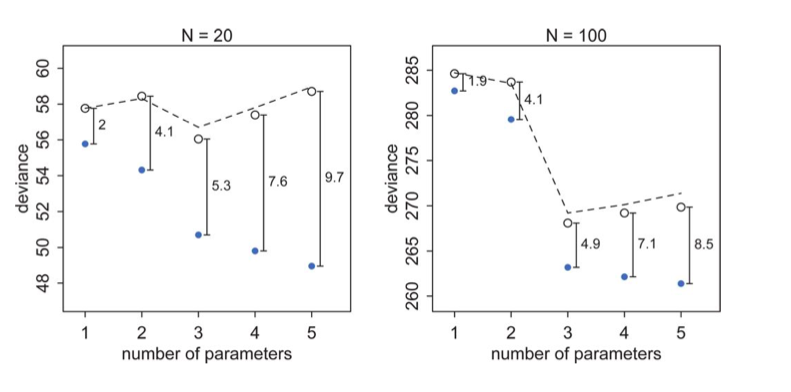

Model Comparison
From KL-divergence to deviance — AIC, DIC, and WAIC for comparing models.
Information Criteria
All information criteria derive from the Deviance, which we learnt about when we learned about the KL-divergence. The idea behind this is covered in our notes on risk and utility, but here is a short summary.
If \(p\) is nature’s distribution, we want to know how far we are from “perfect accuracy” by using \(q\). In other words we need to develop a distance scale for distances between distributions.
This scale is called the Kullback-Leibler (KL) Divergence, introduced in 1951. It is defined thus:
\[\renewcommand{\kld}{D_{KL}}\]
\[\kld(p, q) = E_p[log(p) - log(q)] = E_p[log(p/q)] = \sum_i p_i log(\frac{p_i}{q_i}) \,\,or\, \int dP log(\frac{p}{q})\]
The distance between a distribution and itself is clearly \(\kld(p,p) = 0\).
We can use Jensen’s inequality for expectations on a convex function \(f(x)\),
\[ E[f(X)] \ge f(E[X]) \]
to show that \(\kld(p,q) \ge 0\) with equality iff (if and only if) \(q=p\).
If one uses the law or large numbers to replace the true distribution by its empirical estimate, then we have:
\[\kld(p, q) = E_p[log(p/q)] = \frac{1}{N}\sum_i (log(p_i) - log(q_i)\]
Thus minimizing the KL-divergence involves maximizing \(\sum_i log(q_i)\) which is exactly the log likelihood. Hence we can justify the maximum likelihood principle.
Comparing models
By the same token we can use the KL-Divergences of two different models to do model comparison:
\[\kld(p, q) -\kld(p, r) = E_p[log(r) - log(q)] = E_p[log(\frac{r}{q})]\]
Notice that except for choosing the empirical samples, \(p\) has dissapeared from this formula.
f you look at the expression above, you notice that to compare a model with distribution \(r\) to one with distribution \(q\), you only need the sample averages of the logarithm of \(r\) and \(q\):
\[\kld(p, q) -\kld(p, r) = \langle log(r) \rangle - \langle log(q) \rangle\]
where the angled brackets mean sample average. If we define the deviance:
\[D(q) = -2 \sum_i log(q_i)\],
then
\[\kld(p, q) -\kld(p, r) = \frac{2}{N} (D(q) - D(r))\]
so that we can use the deviance’s for model comparison instead.
More generally, we can define the deviance without using the sample average over the empirical distribution as
\[ D(q) = - \frac{N}{2} E_p[log(q)] \]
Now in the frequentist realm one uses likelihoods. In the bayesian realm, the posterior predictive, which has learned from the data seems to be the more sensible distribution to use. But lets work our way there.
In other words, we are trying to estimate
\[E_p[log(pred(y^*))]\]
where \(pred(y^*)\) is the predictive for points \(y^*\) on the test set or future data.
Call the expected log predictive density at a “new” point:
\[elpd_i = E_p[log(pred(y_i^*)]\]
Then the “expected log pointwise predictive density” is
\[elppd = \sum_i E_p[log(pred(y_i^*))] = \sum_i elpd_i\]
What predictive distribution \(pred\) do we use? We start from the frequentist scenario of using the likelihood at the MLE, then move to using the likelihood at the posterior mean (a sort of plug in approximation) for the DIC, and finally to the fully Bayesian WAIC.
Specifically, in the first two cases, we are writing the predictive distribution conditioned on a point estimate from the posterior:
\[elpd_i = E_p[log(pred(y_i^* \mid \hat{\theta}))]\]
The game we will play in these first two cases is:
- Conditional on fixed \(\theta\), the full predictive splits into a product per point so the writing of elppd as a sum over pointwise elpd is exact
- However we dont know \(p\), so we use the empirical distribution on the training set
- this underestimates the test set deviance as we learnt in the case of the AIC, so we must apply a correction factor.
We dont know p
We do not know nature’s distribution p on future data. We dont even know it empirically..we do have a test set to estimate it as such, but let us suppose for a second that we have not seen any future data. Then we resort to using in-sample information criteria, such as the AIC we studied earlier. We will learn about cross-validation soon, which is a tool to use test data.
Information Measures
We now look at a series of information measures, with greater and greater bayesianism in them. Each of these makes more and more sophisticated estimates of the Deviance. We wish to estimate the out-of-sample deviance, but unless we resort to cross-validation and do repeated fitting, we would be better off estimating the in-sample deviance and doing something to it.
The AIC
In the image below

The test set deviances are \(2*p\) above the training set ones, approximately, where \(p\) is the number of parameters in the model.
This observation leads to an estimate of the out-of-sample deviance by what is called an information criterion, the Akake Information Criterion, or AIC:
\[AIC = D_{train} + 2p\]
\[D_{train} = -2*log(p( y \vert \theta_{mle})\]
and which does carry as an assumption the notion that the likelihood is approximately multivariate gaussian, which as we have seen will be true near its peak.
This is just a penalized log-likelihood or risk if we choose to identify our distribution with the likelihood, and at higher numbers of parameters, increases the out-of-sample deviance, making them less desirable. In a sense, this penalization is a simple form of regularization on our model.
You can think of it as a bias correction, the bias arising because we use our data twice: once to fit the model, and secondly to estimate the Deviance (or KL-divergence).
AIC is reliable only in the case of flat priors overwhelmed by likelihood, an approximately gaussian multivariate posterior, and a sample size much greater thasn the number of parameters. The AIC is not a bayesian measure and we wont bother more about it here.
The DIC (Deviance Information Criterion)
The DIC still uses point estimation, but does so using the posterior distribution. It replaces the MLE with the posterior mean and calculates a similar point estimate. And then it uses the posterior distribution of the training deviance.
Like AIC, the DIC assumes a multivariate gaussian posterior distribution.
\[D_{train} = -2*log(p( y \vert \theta_{post mean})\]
Then DIC, estimating the out-of-sample deviance is
\[DIC = D_{train} + 2p_D\] where \(p_D\) is an effective number of parameters and is calculated thus:
\[p_{DIC} = 2*\left(log(p(y \vert \theta_{post mean}) - E_{post}[log(p(y \vert \theta)]\right)\]
The expectation in the second term is taken over the posterior. It might look like the posterior predictive to you, but remember, we are not drawing new y here, but rather computing expectations over existing y. Indeed we are integrating over the deviance, not the likelihood. So this is a true-blue monte carlo average!
An alternative fomulation for \(p_{DIC}\), guaranteed to be positive, is
\[p_D = 2 * Var_{post}[log(p(y \vert \theta_{post mean}))]\]
Going fully Bayesian: The WAIC
This is finally, a fully bayesian construct.
It does not require a multivariate gaussian posterior. The distinguishing feature of it is that its pointwise, it does not use the joint \(p(y)\) to make its estimates. This is very useful for glms by fitting for each observation, then summing up over observations, and for comparison to cross-validation approaches.
We start by considering the predictive distribution we want to use as the posterior predictive distribution \(pp\). We are then trying to estimate:
\[E_p[log(pp(y^*))]\]
The previous formulae now become:
\[elpd_i = E_p[log(pp(y_i^*)]\]
\[elppd = \sum_i E_p[log(pp(y_i^*))] = \sum_i elpd_i\]
Since we do not know the true distribution \(p\), but rather only have the (empirical) distribution of training data, we replace the
\[elppd = \sum_i E_p[log(pp(y_i^*))]\]
where \(y_i^*\) are new points
by the computed “log pointwise predictive density” (lppd) in-sample
\[lppd = log\left(\prod_j pp(y_j)\right) = \sum_j log\left<p(y_j \vert \theta)\right>_{post} = \sum_j log\left(\frac{1}{S}\sum_{s \sim post} p(y_j \vert \theta_s) \right)\]
which now does the full monte-carlo average in the angled brackets on a point-wise basis.
The lppd is the total across in-sample observations of the average likelihood (over the posterior of each observation. Multiplied by -2, its the pointwise analog of deviance.
The game, as we know now, is that the \(lppd\) of observed data y is an overestimate of the \(elppd\) for future data. Hence the plan is to like to start with the \(llpd\) and then apply some sort of bias correction to get a reasonable estimate of \(elppd\).
This bias correction, \(p_{WAIC}\), also becomes more fully bayesian, as in being
\[p_{WAIC} = 2\sum_i \left(log(E_{post}[p(y_i \vert \theta)] - E_{post}[log(p(y_i \vert \theta))] \right)\]
Once again this can be estimated by
\[\sum_i Var_{post}[log(p(y_i \vert \theta))]\]
If you do these calculations by hand (and you should to check) make sure you use the log-sum-exp trick. Start with log(p), exponential it, sum it, and log again.
Now
\[WAIC = lppd +2 p_W\]
Using information criteria
I will just quote McElreath:
But once we have DIC or WAIC calculated for each plausible model, how do we use these values? Since information criteria values provide advice about relative model performance, they can be used in many different ways. Frequently, people discuss MODEL SELECTION, which usually means choosing the model with the lowest AIC/DIC/WAIC value and then discarding the others. But this kind of selection procedure discards the information about relative model accuracy contained in the differences among the AIC/DIC/WAIC values. Why is this information useful? Because sometimes the differences are large and sometimes they are small. Just as relative posterior probability provides advice about how confident we might be about parameters (conditional on the model), relative model accuracy provides advice about how confident we might be about models (conditional on the set of models compared).
So instead of model selection, this section provides a brief example of model comparison and model averaging.
- MODEL COMPARISON means using DIC/WAIC in combination with the estimates and posterior predictive checks from each model. It is just as important to understand why a model outperforms another as it is to measure the performance difference. DIC/WAIC alone says very little about such details. But in combination with other information, DIC/WAIC is a big help.
- MODEL AVERAGING means using DIC/WAIC to construct a posterior predictive distribution that exploits what we know about relative accuracy of the models. This helps guard against overconfidence in model structure, in the same way that using the entire posterior distribution helps guard against overconfidence in parameter values. What model averaging does not mean is averaging parameter estimates, because parameters in different models have different meanings and should not be averaged, unless you are sure you are in a special case in which it is safe to do so. So it is better to think of model averaging as prediction averaging, because that’s what is actually being done. (McElreath 195-196)
It is critical that you use information criteria to only compare models with the same likelihood.
Let me quote McElreath again:
it is tempting to use information criteria to compare models with different likelihood functions. Is a Gaussian or binomial better? Can’t we just let WAIC sort it out?
Unfortunately, WAIC (or any other information criterion) cannot sort it out. The problem is that deviance is part normalizing constant. The constant affects the absolute magnitude of the deviance, but it doesn’t affect fit to data. Since information criteria are all based on deviance, their magnitude also depends upon these constants. That is fine, as long as all of the models you compare use the same outcome distribution type—Gaussian, binomial, exponential, gamma, Poisson, or another. In that case, the constants subtract out when you compare models by their differences. But if two models have different outcome distributions, the constants don’t subtract out, and you can be misled by a difference in AIC/DIC/WAIC. (McElreath 288)